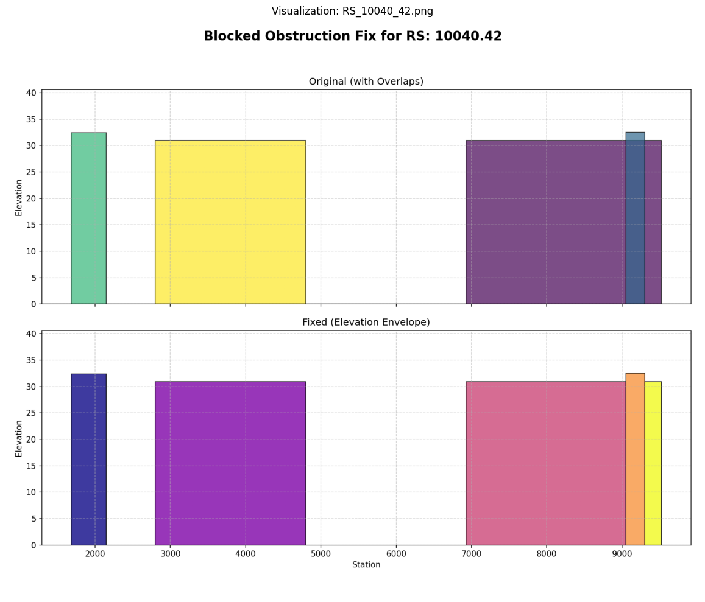

Fixing Blocked Obstruction Overlaps with RasFixit¶
This notebook demonstrates using the RasFixit module to automatically detect and repair overlapping blocked obstructions in HEC-RAS geometry files.
Example Project: HCFCD M3 Model A120-00-00 (Harris County Flood Control District)
Overview¶
Problem: HEC-RAS geometry files sometimes contain overlapping or adjacent blocked obstructions, which cause model errors during geometry preprocessing.
Solution: RasFixit.fix_blocked_obstructions() automatically:
1. Detects overlapping/adjacent obstructions
2. Applies the elevation envelope algorithm (uses max elevation in overlap zones)
3. Inserts 0.02-unit gaps to prevent adjacency errors
4. Creates before/after PNG visualizations for engineering review
5. Creates timestamped backups
Key Principle: All fixes preserve hydraulic behavior by using the maximum (most restrictive) elevation in overlap zones.
1. Setup and Imports¶
# =============================================================================
# DEVELOPMENT MODE TOGGLE
# =============================================================================
USE_LOCAL_SOURCE = True # <-- TOGGLE THIS
from pathlib import Path # Always import Path (needed throughout notebook)
if USE_LOCAL_SOURCE:
import sys
local_path = str(Path.cwd().parent)
if local_path not in sys.path:
sys.path.insert(0, local_path)
print(f"📁 LOCAL SOURCE MODE: Loading from {local_path}/ras_commander")
else:
print("📦 PIP PACKAGE MODE: Loading installed ras-commander")
# Import ras-commander
from ras_commander import RasFixit, FixResults, FixMessage, FixAction
from ras_commander.fixit import log_parser
# Additional imports for this notebook
import pandas as pd
import shutil
# Verify which version loaded
import ras_commander
print(f"✓ Loaded: {ras_commander.__file__}")
📁 LOCAL SOURCE MODE: Loading from c:\GH\ras-commander/ras_commander
✓ Loaded: c:\GH\ras-commander\ras_commander\__init__.py
Parameters¶
Configure these values to customize the notebook for your project.
# =============================================================================
# PARAMETERS - Edit these to customize the notebook
# =============================================================================
from pathlib import Path
# Project Configuration
#PROJECT_NAME = "Clear Creek" # Example project to extract NOT USED IN THIS NOTEBOOK
RAS_VERSION = "6.6" # HEC-RAS version (6.3, 6.5, 6.6, etc.)
# Geometry Settings
GEOM_NUMBER = "01" # Geometry file number
RIVER = "White" # River name for cross section queries
REACH = "West Fork" # Reach name
CROSS_SECTION = "10457.31" # Cross section station (RS)
# Download HCFCD M3 Model A (Clear Creek) containing A120-00-00 project
# This is a real-world project with known obstruction overlap issues
import zipfile
from ras_commander import M3Model
# Step 1: Extract M3 Model 'A' (Clear Creek watershed)
print("Extracting M3 Model 'A' (Clear Creek)...")
m3_path = M3Model.extract_model('A')
print(f"✓ M3 Model extracted to: {m3_path}")
# Step 2: Find and extract A120-00-00 project ZIP
a120_zip = m3_path / "HEC-RAS" / "A120-00-00.zip"
a120_folder = m3_path / "HEC-RAS" / "A120-00-00"
if not a120_folder.exists():
print(f"Extracting A120-00-00 project...")
with zipfile.ZipFile(a120_zip, 'r') as zip_ref:
zip_ref.extractall(a120_folder)
print(f"✓ Project extracted to: {a120_folder}")
else:
print(f"✓ Project already exists: {a120_folder}")
# Step 3: Set paths for this notebook
project_folder = a120_folder
geom_file = project_folder / "A120_00_00.g01"
print(f"\nProject folder: {project_folder}")
print(f"Geometry file exists: {geom_file.exists()}")
2025-12-28 22:42:03 - ras_commander.M3Model - INFO - ----- M3Model Extracting Model -----
2025-12-28 22:42:03 - ras_commander.M3Model - INFO - Extracting model 'A' - Clear Creek
2025-12-28 22:42:03 - ras_commander.M3Model - INFO - Downloading from: https://files.m3models.org/modellibrary/A_Clear_FEMA_Effective.zip?effectivedate=2022-05-05%2005:00
2025-12-28 22:42:03 - ras_commander.M3Model - INFO - Size: 0.03 GB
Extracting M3 Model 'A' (Clear Creek)...
Downloading A: 100%|██████████| 25.7M/25.7M [00:02<00:00, 9.18MiB/s]
2025-12-28 22:42:07 - ras_commander.M3Model - INFO - Downloaded to c:\GH\ras-commander\examples\m3_models\A_Clear_FEMA_Effective.zip
2025-12-28 22:42:07 - ras_commander.M3Model - INFO - Extracting to c:\GH\ras-commander\examples\m3_models\Clear Creek...
2025-12-28 22:42:07 - ras_commander.M3Model - INFO - Successfully extracted model 'A' to c:\GH\ras-commander\examples\m3_models\Clear Creek
✓ M3 Model extracted to: c:\GH\ras-commander\examples\m3_models\Clear Creek
Extracting A120-00-00 project...
✓ Project extracted to: c:\GH\ras-commander\examples\m3_models\Clear Creek\HEC-RAS\A120-00-00
Project folder: c:\GH\ras-commander\examples\m3_models\Clear Creek\HEC-RAS\A120-00-00
Geometry file exists: True
# Detect overlaps without modifying the file
results = RasFixit.detect_obstruction_overlaps(geom_file)
print(f"Geometry File: {geom_file.name}")
print(f"Cross Sections Checked: {results.total_xs_checked}")
print(f"Cross Sections with Overlaps: {results.total_xs_fixed}")
if results.messages:
print(f"\nAffected cross sections:")
for msg in results.messages:
print(f" RS {msg.station}: {msg.original_count} obstructions -> would become {msg.fixed_count}")
Geometry File: A120_00_00.g01
Cross Sections Checked: 91
Cross Sections with Overlaps: 15
Affected cross sections:
RS 20262.89: 5 obstructions -> would become 6
RS 17853.49: 2 obstructions -> would become 2
RS 17833.49: 2 obstructions -> would become 2
RS 17612.53: 3 obstructions -> would become 3
RS 15831.37: 2 obstructions -> would become 2
RS 15136.2: 7 obstructions -> would become 8
RS 14284.07: 3 obstructions -> would become 4
RS 11422.31: 3 obstructions -> would become 4
RS 11181.99: 3 obstructions -> would become 4
RS 10150.51: 4 obstructions -> would become 5
RS 10040.42: 4 obstructions -> would become 5
RS 9960.36: 3 obstructions -> would become 4
RS 5714.48: 2 obstructions -> would become 3
RS 4894.121: 2 obstructions -> would become 2
RS 4053.094: 2 obstructions -> would become 2
3. Examine the Overlapping Obstructions¶
Let's look at the detailed data for one of the affected cross sections.
# Look at first affected cross section in detail
if results.messages:
msg = results.messages[0]
print(f"=== Cross Section RS {msg.station} ===")
print(f"\nOriginal Obstructions ({msg.original_count}):")
for i, (start, end, elev) in enumerate(msg.original_data, 1):
print(f" {i}. Station {start:8.2f} to {end:8.2f}, Elevation: {elev:.2f}")
print(f"\nFixed Obstructions ({msg.fixed_count}) - using max elevation envelope:")
for i, (start, end, elev) in enumerate(msg.fixed_data, 1):
print(f" {i}. Station {start:8.2f} to {end:8.2f}, Elevation: {elev:.2f}")
=== Cross Section RS 20262.89 ===
Original Obstructions (5):
1. Station 1771.46 to 2303.49, Elevation: 37.43
2. Station 3165.57 to 4205.00, Elevation: 34.20
3. Station 4825.70 to 5057.23, Elevation: 34.30
4. Station 4850.00 to 5050.00, Elevation: 35.30
5. Station 3100.00 to 3200.00, Elevation: 35.10
Fixed Obstructions (6) - using max elevation envelope:
1. Station 1771.46 to 2303.49, Elevation: 37.43
2. Station 3100.00 to 3200.00, Elevation: 35.10
3. Station 3200.02 to 4205.00, Elevation: 34.20
4. Station 4825.70 to 4850.00, Elevation: 34.30
5. Station 4850.02 to 5050.00, Elevation: 35.30
6. Station 5050.02 to 5057.23, Elevation: 34.30
4. Fix Overlapping Obstructions¶
Now let's apply the fixes. We'll work on a copy of the geometry file to preserve the original.
This will: 1. Create a timestamped backup of the file 2. Apply the elevation envelope algorithm to resolve overlaps 3. Generate before/after PNG visualizations 4. Return detailed results for engineering review
IMPORTANT: Always review the visualizations before accepting changes!
# Create a working copy so we don't modify the original
working_copy = project_folder / "A120_00_00_test_copy.g01"
shutil.copy(geom_file, working_copy)
print(f"Created working copy: {working_copy.name}")
# Fix overlapping obstructions with visualization
fix_results = RasFixit.fix_blocked_obstructions(
working_copy,
backup=True, # Create timestamped backup
visualize=True # Generate before/after PNGs
)
print(f"\n=== Fix Results ===")
print(f"Cross Sections Checked: {fix_results.total_xs_checked}")
print(f"Cross Sections Fixed: {fix_results.total_xs_fixed}")
print(f"Backup Created: {fix_results.backup_path}")
print(f"Visualizations: {fix_results.visualization_folder}")
2025-12-28 22:42:08 - ras_commander.fixit.RasFixit - INFO - Created backup: c:\GH\ras-commander\examples\m3_models\Clear Creek\HEC-RAS\A120-00-00\A120_00_00_test_copy.g01.backup_20251228_224208
2025-12-28 22:42:08 - ras_commander.fixit.RasFixit - INFO - Saving visualizations to: c:\GH\ras-commander\examples\m3_models\Clear Creek\HEC-RAS\A120-00-00\A120_00_00_test_copy_g01_Obstructions_Fixed
Created working copy: A120_00_00_test_copy.g01
2025-12-28 22:42:13 - ras_commander.fixit.RasFixit - INFO - Fixed 15 cross sections in A120_00_00_test_copy.g01
=== Fix Results ===
Cross Sections Checked: 91
Cross Sections Fixed: 15
Backup Created: c:\GH\ras-commander\examples\m3_models\Clear Creek\HEC-RAS\A120-00-00\A120_00_00_test_copy.g01.backup_20251228_224208
Visualizations: c:\GH\ras-commander\examples\m3_models\Clear Creek\HEC-RAS\A120-00-00\A120_00_00_test_copy_g01_Obstructions_Fixed
5. Review Fix Results¶
The FixResults object contains detailed information about every fix applied. Let's examine it.
# Convert results to DataFrame for easy analysis
df = fix_results.to_dataframe()
print(f"Fix Summary DataFrame ({len(df)} rows):")
print(df[['station', 'action', 'original_count', 'fixed_count', 'message']].to_string())
Fix Summary DataFrame (15 rows):
station action original_count fixed_count message
0 20262.89 OVERLAP_RESOLVED 5 6 Resolved 5 overlapping obstructions to 6 non-overlapping
1 17853.49 OVERLAP_RESOLVED 2 2 Resolved 2 overlapping obstructions to 2 non-overlapping
2 17833.49 OVERLAP_RESOLVED 2 2 Resolved 2 overlapping obstructions to 2 non-overlapping
3 17612.53 OVERLAP_RESOLVED 3 3 Resolved 3 overlapping obstructions to 3 non-overlapping
4 15831.37 OVERLAP_RESOLVED 2 2 Resolved 2 overlapping obstructions to 2 non-overlapping
5 15136.2 OVERLAP_RESOLVED 7 8 Resolved 7 overlapping obstructions to 8 non-overlapping
6 14284.07 OVERLAP_RESOLVED 3 4 Resolved 3 overlapping obstructions to 4 non-overlapping
7 11422.31 OVERLAP_RESOLVED 3 4 Resolved 3 overlapping obstructions to 4 non-overlapping
8 11181.99 OVERLAP_RESOLVED 3 4 Resolved 3 overlapping obstructions to 4 non-overlapping
9 10150.51 OVERLAP_RESOLVED 4 5 Resolved 4 overlapping obstructions to 5 non-overlapping
10 10040.42 OVERLAP_RESOLVED 4 5 Resolved 4 overlapping obstructions to 5 non-overlapping
11 9960.36 OVERLAP_RESOLVED 3 4 Resolved 3 overlapping obstructions to 4 non-overlapping
12 5714.48 OVERLAP_RESOLVED 2 3 Resolved 2 overlapping obstructions to 3 non-overlapping
13 4894.121 OVERLAP_RESOLVED 2 2 Resolved 2 overlapping obstructions to 2 non-overlapping
14 4053.094 OVERLAP_RESOLVED 2 2 Resolved 2 overlapping obstructions to 2 non-overlapping
# Export to CSV for documentation
csv_path = project_folder / "obstruction_fix_report.csv"
df.to_csv(csv_path, index=False)
print(f"Fix report exported to: {csv_path}")
Fix report exported to: c:\GH\ras-commander\examples\m3_models\Clear Creek\HEC-RAS\A120-00-00\obstruction_fix_report.csv
6. View Visualizations¶
The PNG visualizations show before/after comparisons for each fixed cross section. They are critical for engineering review.
# Display a visualization (requires matplotlib)
import matplotlib.pyplot as plt
from matplotlib.image import imread
if fix_results.visualization_folder and fix_results.visualization_folder.exists():
png_files = sorted(fix_results.visualization_folder.glob("*.png"))
if png_files:
# Display first visualization
img = imread(png_files[0])
plt.figure(figsize=(14, 10))
plt.imshow(img)
plt.axis('off')
plt.title(f"Visualization: {png_files[0].name}")
plt.tight_layout()
plt.show()
print(f"\nTotal visualizations generated: {len(png_files)}")
print(f"Location: {fix_results.visualization_folder}")
else:
print("No PNG files found in visualization folder.")
else:
print("No visualization folder available.")

Total visualizations generated: 15
Location: c:\GH\ras-commander\examples\m3_models\Clear Creek\HEC-RAS\A120-00-00\A120_00_00_test_copy_g01_Obstructions_Fixed
# Display all visualizations (optional - may be slow for many cross sections)
show_all = False # Set to True to view all
if show_all and fix_results.visualization_folder:
png_files = sorted(fix_results.visualization_folder.glob("*.png"))
for png_file in png_files:
img = imread(png_file)
plt.figure(figsize=(14, 10))
plt.imshow(img)
plt.axis('off')
plt.title(png_file.name)
plt.tight_layout()
plt.show()
7. Verify Fixes¶
After fixing, verify that no overlaps remain.
# Verify no overlaps remain after fix
verify_results = RasFixit.detect_obstruction_overlaps(working_copy)
if verify_results.total_xs_fixed == 0:
print("SUCCESS: No overlapping obstructions remaining!")
print(f"Verified {verify_results.total_xs_checked} cross sections.")
else:
print(f"WARNING: {verify_results.total_xs_fixed} cross sections still have overlaps.")
print("Please review the file manually.")
SUCCESS: No overlapping obstructions remaining!
Verified 91 cross sections.
8. Log Parsing for Automated Workflows¶
The log_parser module can detect obstruction errors from HEC-RAS compute logs, enabling automated fix workflows.
# Example: Parse HEC-RAS log for obstruction errors
sample_log = """
HEC-RAS Model Computation
Processing cross section 20262.89
ERROR: Cross Section 20262.89 has overlapping blocked obstructions
Processing cross section 18765.43
ERROR: Blocked obstructions at station 18765.43 overlap or are adjacent
Computation complete with errors.
"""
# Detect errors
errors = log_parser.detect_obstruction_errors(sample_log)
print(f"Detected {len(errors)} obstruction errors")
# Extract affected stations
stations = log_parser.extract_cross_section_ids(sample_log)
print(f"Affected stations: {stations}")
# Generate human-readable report
print("\n" + log_parser.generate_error_report(errors))
Detected 2 obstruction errors
Affected stations: ['18765.43', '20262.89']
================================================================================
BLOCKED OBSTRUCTION ERROR REPORT
================================================================================
Total Errors Found: 2
OVERLAP (1 occurrences):
--------------------------------------------------------------------------------
River Station: 20262.89
Line: 4
Message: ERROR: Cross Section 20262.89 has overlapping blocked obstructions
ADJACENT (1 occurrences):
--------------------------------------------------------------------------------
River Station: 18765.43
Line: 6
Message: ERROR: Blocked obstructions at station 18765.43 overlap or are adjacent
================================================================================
# Automated workflow: Detect errors from log, then fix geometry files
def auto_fix_workflow(log_file_path, project_dir):
"""Automated workflow to detect and fix obstruction errors."""
# Step 1: Check log for errors
if not log_parser.has_obstruction_errors(log_file_path):
print("No obstruction errors found in log.")
return None
# Step 2: Read log and detect errors
with open(log_file_path, 'r') as f:
log_content = f.read()
errors = log_parser.detect_obstruction_errors(log_content)
print(f"Found {len(errors)} obstruction errors")
# Step 3: Find geometry files in project
geom_files = log_parser.find_geometry_files_in_directory(project_dir)
print(f"Found {len(geom_files)} geometry files")
# Step 4: Fix each geometry file
all_results = {}
for geom_path in geom_files:
results = RasFixit.fix_blocked_obstructions(
geom_path,
backup=True,
visualize=True
)
all_results[geom_path] = results
print(f" Fixed {results.total_xs_fixed} cross sections in {Path(geom_path).name}")
return all_results
print("auto_fix_workflow() function defined.")
print("Usage: auto_fix_workflow('compute.log', 'path/to/project')")
auto_fix_workflow() function defined.
Usage: auto_fix_workflow('compute.log', 'path/to/project')
9. Cleanup (Optional)¶
Remove test files after verification.
# Optional: Clean up test files
cleanup = True # Set to False to keep test files
if cleanup:
# Remove working copy
if working_copy.exists():
working_copy.unlink()
print(f"Removed: {working_copy.name}")
# Remove backup
if fix_results.backup_path and fix_results.backup_path.exists():
fix_results.backup_path.unlink()
print(f"Removed backup: {fix_results.backup_path.name}")
# Remove visualization folder
if fix_results.visualization_folder and fix_results.visualization_folder.exists():
shutil.rmtree(fix_results.visualization_folder)
print(f"Removed visualization folder: {fix_results.visualization_folder.name}")
# Remove CSV report
if csv_path.exists():
csv_path.unlink()
print(f"Removed: {csv_path.name}")
print("\nCleanup complete!")
else:
print("Cleanup skipped. Set cleanup=True to remove test files.")
Removed: A120_00_00_test_copy.g01
Removed backup: A120_00_00_test_copy.g01.backup_20251228_224208
Removed visualization folder: A120_00_00_test_copy_g01_Obstructions_Fixed
Removed: obstruction_fix_report.csv
Cleanup complete!
Summary¶
This notebook demonstrated:
Detection:
- RasFixit.detect_obstruction_overlaps() - Non-destructive scan for overlaps
Fixing:
- RasFixit.fix_blocked_obstructions() - Apply elevation envelope algorithm
- backup=True creates timestamped backups
- visualize=True generates before/after PNGs
- dry_run=True detects without modifying
Log Parsing:
- log_parser.detect_obstruction_errors() - Parse HEC-RAS logs
- log_parser.find_geometry_files_in_directory() - Find .g## files
- log_parser.generate_error_report() - Human-readable report
Results:
- FixResults.to_dataframe() - Export to pandas DataFrame
- FixMessage contains original and fixed data for audit trail
Engineering Review Requirements¶
IMPORTANT: All fixes should be reviewed by a licensed professional engineer before accepting changes to production models.
The visualization outputs provide an audit trail showing: - Original obstruction configuration - Fixed obstruction configuration - Algorithm decisions made
Algorithm Details¶
The elevation envelope algorithm: 1. Collects all critical stations (start/end of each obstruction) 2. For each segment between stations, uses maximum elevation (most restrictive) 3. Merges adjacent segments with same elevation 4. Inserts 0.02-unit gaps where different elevations meet (HEC-RAS requirement)
This is hydraulically conservative - it preserves flow restrictions in overlap zones.
Example Project¶
This notebook uses the HCFCD M3 Model A120-00-00 (Harris County Flood Control District), which contains real-world blocked obstruction issues in 15 of its 91 cross sections.